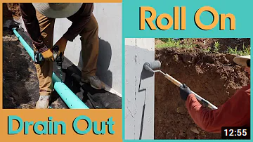

Basements
Basements provide extra potential living space if detailed well enough to stay dry. For the extra cost of digging a little deeper and building the foundation a little taller, you can double a home's living space. Too often basements are an afterthought — not completely inside or outside the thermal envelope and prone to air leakage and moisture problems. Well-detailed basements are warm, dry, and healthy.
Features that make a good Basement
- Wide roof overhangs to keep rain away from the foundation.
- Gutters at the roof eaves; these gutters should be connected to solid (non-perforated) conductor pipes that convey the roof water far from the house (either to daylight or a dry well).
- A 4-inch-thick layer of crushed stone under the basement slab as a capillary break; the crushed stone layer needs to be vented through the roof to help control radon.
- A layer of horizontal rigid foam on top of the crushed stone to insulate the slab from the cold soil below. Except in the mildest climates, insulation should always be installed under slabs, at slab perimeters, and at basement and crawl space walls. Under the slab, consider EPS over XPS if you want to lower your carbon footprint.
- The main reason to include the rigid foam under the slab — at least in cold climates — has nothing to do with energy savings; the foam is there to keep the slab warm enough during the summer to avoid condensation or moisture accumulation in the slab. If the slab stays dry during the summer, the basement is less likely to smell damp and moldy. That's why it makes sense for builders in Climate Zones 4 through 8 to install horizontal rigid foam under a basement slab. If the basement will remain unfinished or is a walkout, then a reason could be raised to omit this rigid foam to save money, but it's best to assume that it may be finished in the future.
- A layer of polyethylene above the rigid foam (directly under the concrete slab) to act as a vapor barrier.
- At least one 4-inch-diameter drain pipe running horizontally through the footing, to connect the crushed stone layer under your basement slab with the exterior footing drain.
- A capillary break (for example, an asphaltic damp-proofing compound, UGL DryLok, or elastomeric paint) between the top of the concrete footing and the foundation wall.
- A ring of perforated drain pipe on the outside of the footing, surrounded by crushed stone and wrapped with filter fabric to make a "burrito," drained to daylight, to a distant drywell, or to an interior sump.
-
An application of damp-proofing compound or waterproofing compound on the exterior side of the concrete foundation walls. Fixing a wet basement is expensive — especially if the repair work requires excavation of the soil on the outside of your foundation. In general, it's better to spend a few hundred dollars on true waterproofing details (and not just damp-proofing) during new construction than thousands (or tens of thousands) of dollars on future repairs.
An Excellent Basement Waterproofing System - Jake Bruton (Aarow Building)
- A layer of dimple-mat drainage board installed on the exterior side of the foundation walls; failing that, the foundation should be backfilled with coarse, free-draining material like crushed stone, topped with an 8-inch layer of dirt (ideally, dirt with a high clay content).
- Most basements have pipes and ducts that are installed below the floor joists. If you ever want to finish the basement, these ducts and pipes dictate a low ceiling. That's why it often makes sense to specify 9-foot basement walls for a new house.
- Those bargain-priced metal window frames typically cast into a concrete basement wall are energy sinks that should be avoided. The metal frames are a conduit for heat and cold, and the single layer of glass results in a performance standard well below that of windows installed elsewhere in the house. It makes more sense to specify a window that meets basic performance criteria: double-glazing with low-e coating for a low U-factor, and a non-metallic frame clad in aluminum or vinyl for low maintenance and good thermal performance.
- Closed-cell foam sill seal between the top of the foundation walls and the mudsill, to reduce air leakage and to act as a capillary break.
{kind=link}
Consider Thinner Walls
{kind=link}
Many concrete basement foundations are probably stronger than they need to be. A typical foundation wall 8 in. thick rests on a 12-in.-wide footing that distributes the load evenly. Because of the enormous compressive strength of concrete, it's very unlikely the house will fall down. But it takes a great deal of energy (and greenhouse gas emissions) to manufacture cement, so it pays to reduce the amount of concrete in a foundation wall if possible. Building codes are based on assumptions about the bearing capacity of the soil beneath the footings as well as the weight of the structure. Calculating the loads more precisely, along with testing soils on the site, may allow thinner foundation walls, lowering costs and consuming less material.
Portland cement is energy intensive to make and produces about 6% of the world's carbon dioxide emissions. The CO2 comes from both the manufacturing process and the chemical process of calcining limestone. One way to reduce the environmental burdens of concrete is to use fly ash (or other pozzolans, such as blast-furnace slag) instead of Portland cement. Fly ash is a waste product from coal-fired power plants. Portland cement accounts for 12% of most concrete, replacing it with 15% to 25% Type C or Type F fly ash are fairly common, and mixes up to 60% are sometimes used. Ask local or regional departments of transportation what fly ash mixes they have tested and support. This can help the building department (and the concrete contractor) get on board.
Air Sealing
Air-sealing a basement - Martin Holladay (Fine Homebuilding/Green Building Advisor)
Any basement design should specify air-barrier details. The most critical basement areas for air sealing are:
Airtight sump lid - Incredible as it sounds, the stack effect in many houses is strong enough to pull air into the house through a sump. The solution is an airtight sump lid (available at Shelter Supply.
Rim joist - The rim joist area should be sealed with spray polyurethane foam or individual rectangles of rigid foam insulation. Fiberglass batts don't stop air, so they allow moist interior air to contact the cold rim joist, where moisture can condense.
Insulating Walls
If you live in Climate Zone 3 or anywhere colder, it's cost-effective and wise to install basement wall insulation. The Code:
- Climate Zone 3: R-5
- Climate Zone 4 (except Marine Zone 4): R-10
- Marine Zone 4 and Climate Zones 5, 6, 7, and 8: R-15
Ideally insulation has the best efficiency on the outside of the concrete wall. Insulated Concrete Forms (ICFs), while effective and energy efficient, cost more than a site-insulated poured concrete wall. Unfortunately, insulating the exterior is more difficult and more costly than insulating the foundation internally. The best way to insulate a basement wall on the interior is with foam insulation that is adhered or attached directly to the concrete. Any of the following insulation materials are acceptable for this purpose: closed-cell spray polyurethane foam, XPS, EPS, or polyisocyanurate.
Can I insulate on the interior with fiberglass batts, mineral wool batts, or cellulose?
- No. Fiberglass batts, mineral wool batts, and cellulose are air-permeable. When this type of insulation is installed in contact with concrete, the moisture in the interior air condenses against the cold concrete surface, leading to mold and rot. That's why I advise builders that fiberglass batts, mineral wool insulation, and cellulose should never be installed against a basement wall.
- The risk of moisture problems is reduced if the concrete is first covered with a continuous layer of rigid foam or closed-cell spray foam. If that is done, some builders then install a 2×4 wall on the interior side of the foam insulation and fill the stud bays with fiberglass batts. This approach is less risky than installing fiberglass directly against the concrete. However, I don't think that fiberglass batts belong in a basement. My advice: if you want a higher R-value, just install thicker rigid foam, and leave the stud bays empty.

Foundation Design Handbook - Oak Ridge National Laboratory
A Vapor barrier should not be used with interior insulation. The basement wall must maintain some drying capacity to the interior if wetting occurs since the below-grade portion of the wall cannot dry to the exterior. This means that interior vapor retarders or any impermeable interior wall finishes such as vinyl wall coverings or oil/alkyd/epoxy paint systems should not be installed. You don't want poly between the concrete and the insulation; nor do you want poly between gypsum drywall and the insulation. You don't want poly anywhere.
Crawl Space
Crawl spaces are recommended to be avoided – they offer none of the benefits of a basement and all of the drawbacks (possibility to leak or have condensation issues). It is recommended to be sealed just like a basement. There are two types of crawlspaces: vented and sealed. Vented crawlspaces are associated with moisture problems and mold. Although older building codes required crawlspaces to be vented, newer versions of the code allow sealed crawlspaces. In most cases, a home with a sealed crawlspace will use less energy than a home with a vented crawlspace.